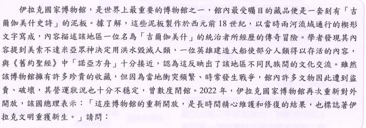

分享原卷｜第 23 題
完整原題
作答所需文章／材料
伊拉克國家博物館，是世界上最重要的博物館之一，館內最受矚目的藏品便是一套刻有「吉爾伽美什史詩」的泥板。據了解，這些泥板製作於西元前18世紀，以當時兩河流域通行的楔形文字寫成，內容描述該地區一位名為「吉爾伽美什」的統治者所經歷的傳奇冒險。學者發現其內容提到美索不達米亞眾神決定用洪水毀滅人類，一位英雄建造大船使部分人類得以存活的內容，與《舊約聖經》中「諾亞方舟」十分接近，認為這反映出了該地區不同民族間的文化交流。雖然該博物館有許多珍貴的收藏，但因為當地衝突頻繁、時常發生戰爭，館內許多文物因此遭到盜竊、破壞，其營運狀況也十分不穩定，曾數度閉館。2022年，伊拉克國家博物館再次重新對外開放，該國總理表示：「這座博物館的重新開放，是長時間精心維護和修復的結果，也標誌著伊拉克文明重獲新生。」根據上文，比較「吉爾伽美什史詩」與「諾亞方舟故事」，可做為研究下列何者的依據？
(A) 古代希伯來人在西亞地區的發展
(B) 亞歷山大東征與希臘文化的傳播
(C) 耶穌的傳教活動與早期教會發展
(D) 伊斯蘭文化圈的形成與向外傳播
先想一想，再查看答案、解說與原圖
正確答案：A。諾亞方舟出自舊約，與古代希伯來人的宗教文化相關，可比較西亞文化交流。
逐項解析
| 選項與原句 | 判讀 | 句意與判斷理由 |
|---|---|---|
| (A) 古代希伯來人在西亞地區的發展 | 應選 | 諾亞方舟出自舊約，與古代希伯來人的宗教文化相關，可比較西亞文化交流。 |
| (B) 亞歷山大東征與希臘文化的傳播 | 不選 | 文章的比較不以亞歷山大或希臘文化為主。 |
| (C) 耶穌的傳教活動與早期教會發展 | 不選 | 諾亞方舟是舊約故事，不是耶穌傳教或早期教會的直接記錄。 |
| (D) 伊斯蘭文化圈的形成與向外傳播 | 不選 | 史詩與舊約故事的時空早於伊斯蘭教形成。 |
詳細說明與解題步驟
一、分辨兩份材料
吉爾伽美什史詩屬兩河流域文化；諾亞方舟故事見於舊約，連到古代希伯來文化。
二、從共同內容提出研究問題
兩個洪水與造船故事相似，可作為探討西亞不同民族文化交流的材料，最接近A。
三、避免年代錯置
基督教、伊斯蘭教雖也重視部分聖經人物，但題目比較的這兩份材料並非早期教會或伊斯蘭向外傳播的直接證據。相似故事可提供研究線索，並不單憑相似就證明所有細節的單向傳播。
核對註記：已核對題幹、全部選項與必要材料；教材對應課次未確認，歸綜合。
原圖（僅本題）
